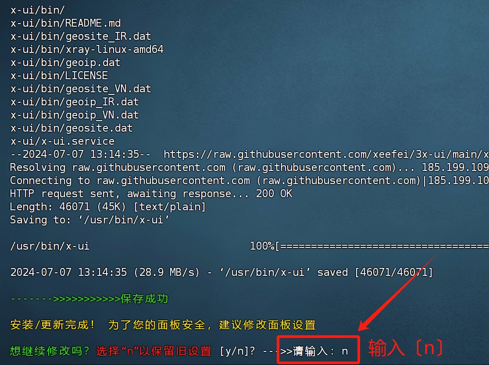
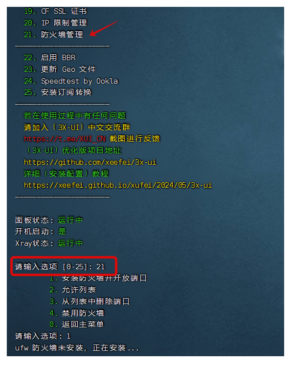
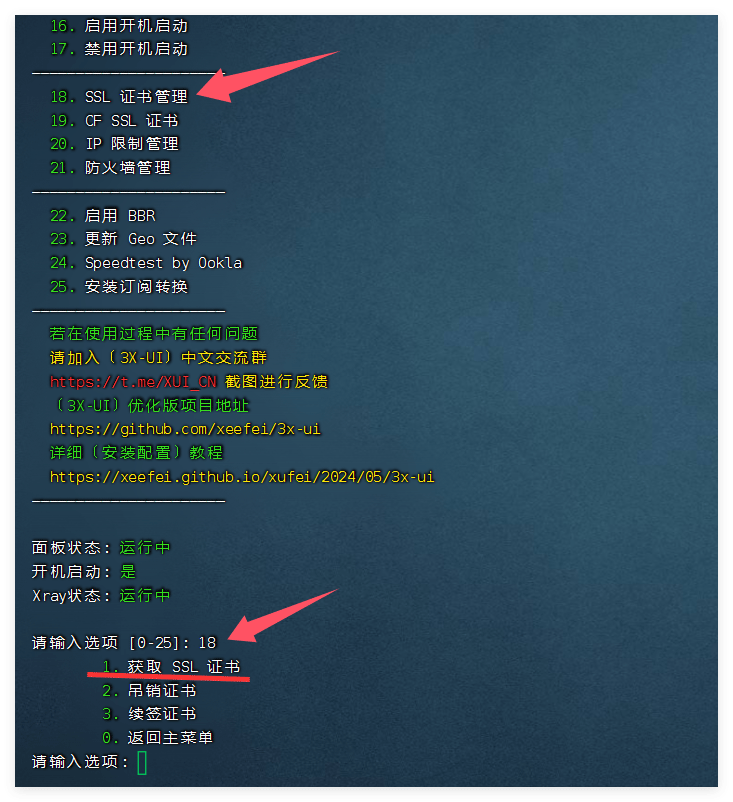
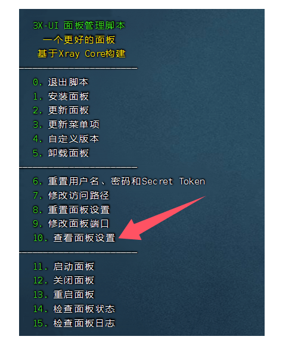
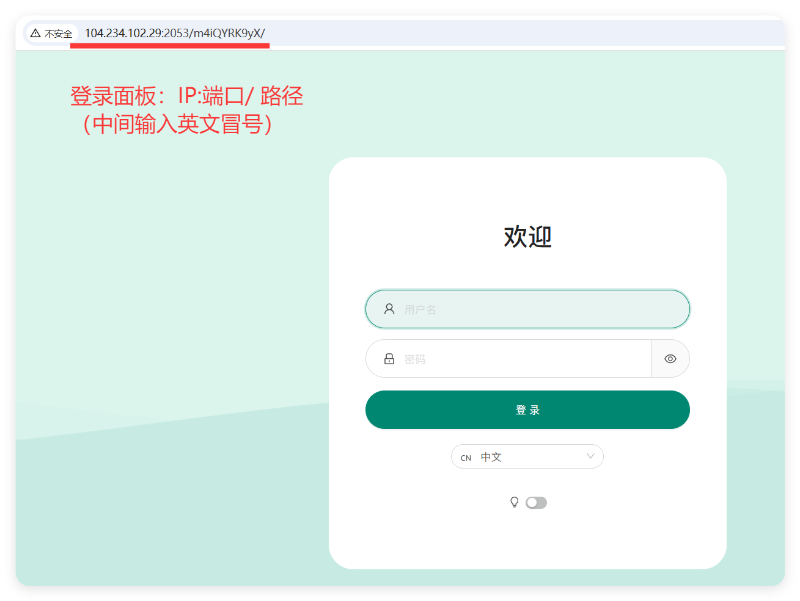
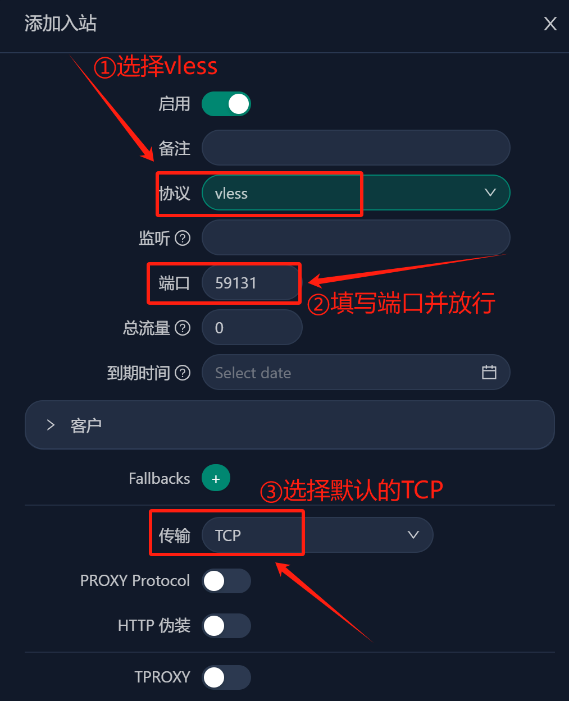
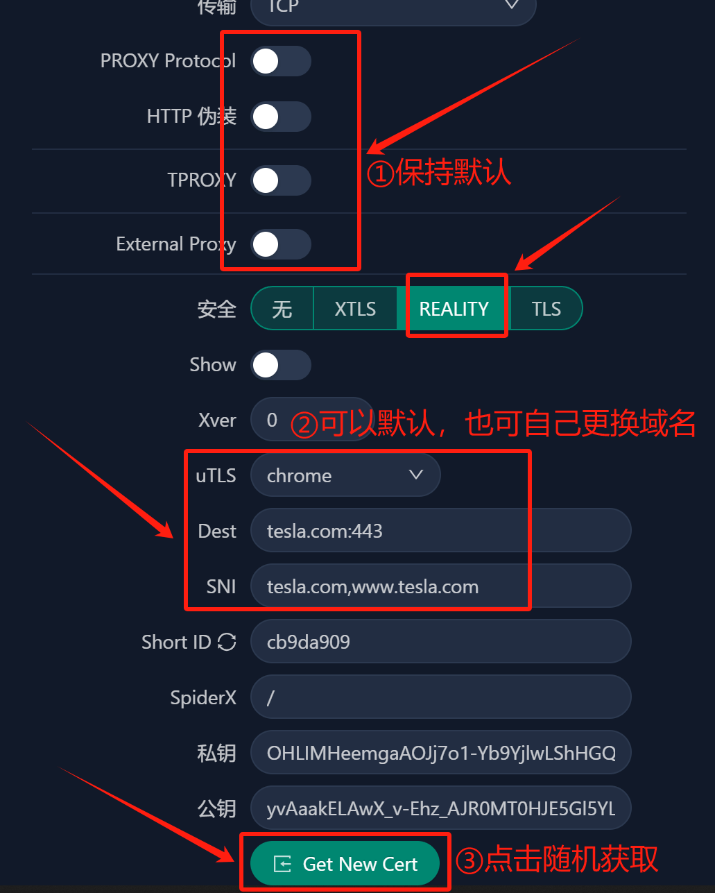
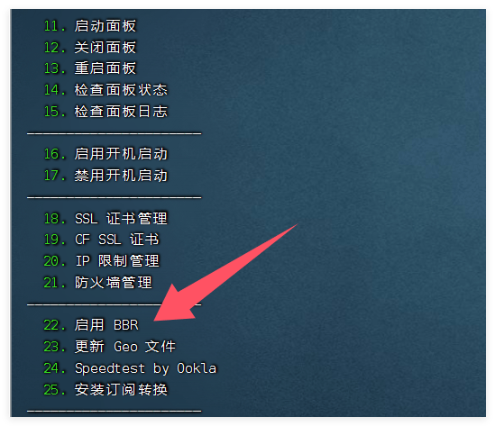

3X-ui 面板搭建【优化版】，VPS搭建独享IP节点
🕓2025年04月02日
视频教程：▶https://youtu.be/1-TGGlkmJik
✰〔3X-UI优化版〕跟原版3X-UI的区别？✰
- 1、最大限度地汉化了面板项目，更适合中文宝宝体质，包括：
①优化在VPS中进行〔脚本安装过程〕的汉化提示，增加相应的安装中文提示，让中文用户能明白清楚自己安装到了哪个环节？在细节方面，增加了安装成功之后的〔用户设置信息〕提示，在脚本中加入〔面板登录地址〕显示，
②管理后台进行了相应的〔图标和按钮〕汉化，让中文宝宝能够看得懂，
③安装成功后〔自动更改〕后台管理界面和电报机器人界面默认为〔中文〕，
④在管理后台中〔设置证书处〕，增加了acme方式填入路径的提示； - 2、优化了电报机器人响应〔按钮〕的名称和排序；
- 3、创建了〔3X-UI〕中文交流群，各位中文宝宝可以一起讨论交流；
- 4、管理后台中增加了〔实用导航〕页面，里面包含实用内容；
- 5、优化了后台〔二维码〕显示模式，点击打开会更加丝滑美观；
- 6、在创建reality协议时，更改uTLS指纹默认使用chrome；
- 7、更新README内容添加备份&恢复操作说明，以及更多其他图文介绍；
- 8、管理后台中增加〔端口检测〕和〔网络测速〕，点击可以跳转直达；
- 9、增加了详细的项目〔安装配置教程〕，解决小白用户不懂配置的烦恼。系统状态监控
3X-UI 优化版开源项目地址:https://github.com/gm-cx/3x-ui-cn
一、准备工作
1、域名一个:推荐在 Namesilo 进行购买（新用户1美元优惠券：kejixiaolu），因为他的 WHOIS 隐私 是免费的，可以适当的进行一下隐私保护，而且域名还都挺便宜的。（域名可以在 Namesilo 解析，也可以将域名托管到 Cloudflare ，解析更快。）
检测服务器IP是否被封，确认IP可用。
已经解析的域名，Win+R 输入 CMD 回车：键入ping 空格输入你的域名，检查一下是否可以 ping 通。
2、一台境外 VPS 主流系统。 例如：Debian 12+ / Ubuntu 20.04+ / CentOS 8+
Vultr 注册网址：https://kjxl.cc/vultr （按时计费，最低6$/月。）
六六云VPS注册网址：https://kjxl.cc/666clouds（双ISP，支持tiktok）
全站九折优惠：XL666
年付七折优惠：year30off
3、下载并安装 FinalShell SSH 工具
Windows、macOS、Linux 版下载地址：点击进入下载
二、安装 3X-ui 面板
2.1、一键安装依赖包
更新及安装组件。下面环境的安装方式，大家根据自己的系统选择命令安装就好了。
1、Debian/Ubuntu系统执行以下命令：
复制 apt update -y && apt install -y curl && apt install -y socat
2、CentOS系统执行以下命令：
复制 yum update -y && yum update -y && yum install -y socat
2.2、安装&升级
【全新安装】请执行以下脚本：
复制 bash <(curl -Ls https://raw.githubusercontent.com/xeefei/3x-ui/master/install.sh)
若要对版本进行升级，可直接通过脚本选择【2】，
在到这一步必须要注意：要保留旧设置的话，需要输入【n】

2.3、放行端口
若你的VPS默认有防火墙，请在安装完成之后放行指定端口
1、放行【面板登录端口】
2、放行出入站管理协议端口
3、如果要申请安装证书并每3个月【自动续签】证书，请确保80和443端口是放行打开的
4、可通过此脚本的第【21】选项去安装防火墙进行管理，如下图：

PS：若要一次性放行多个端口或一整个段的端口，用英文逗号隔开。
若你的VPS没有防火墙，则所有端口都是能够ping通的，可自行选择是否进入脚本安装防火墙保证安全，但安装了防火墙必须放行相应端口。
2.4、申请SSL证书
3x-ui的管理面板：输入" x-ui " 然后回车，输入数字 “18” SSL 证书管理，接下来输入“1” 开始申请证书，如图：

接下来，按提示输入域名，把自己的域名托管到CF，并解析到自己VPS的IP，不要开启【小云朵】
三、3X-ui 面板登录
如果在安装过程中，全部都是默认【回车键】安装的话，用户名/密码/访问路径是随机的，而面板监听端口默认是2053，最好进入面板更改。登陆面板：在浏览器内输入“服务器IP:端口/路径”，进入登录页面

查看登录用户名、密码和面板路径，如下图：

在SSH输入“x-ui”，输入“10”查看面板设置。

面板设置：
1、已经安装证书的【路径】，位置在：/root/.acme.sh/（域名）_ecc；
2、进入后台【面板设置】—–>【常规】中，去分别填入刚才已经记录的证书公钥、私钥路径；
3、点击左上角的【保存】和【重启面板】，即可用自己域名进行登录管理。
4、再次登录面板：域名:端口/路径
PS：若你在正确完成了上述步骤之后，你没有安装证书的情况下，去用IP+端口号/路径的方式却不能访问面板，那请检查一下是不是你的浏览器自动默认开启了https模式，需要手动调整一下改成http方式，把“s”去掉，即可访问成功。
四、创建【入站协议】
1、点击左边【入站列表】，然后【添加入站】，传输方式保持【TCP】不变，尽量选择主流的vless+reality+vision协议组合，

在创建reality协议过程中，至于其他诸如：PROXY Protocol，HTTP 伪装，TPROXY，External Proxy等等选项，若无特殊要求，保持默认设置即可，不用去动它们，

其他：流量限制，到期时间，客户TG的ID等选项根据自己需求填写
PS：一定要放行端口之后，确保端口能够ping通，再导入软件。
节点配置及功能方面，请看 视频教程
五、关闭防火墙/放行端口
关闭防火墙：
复制 sudo ufw disable
放行端口 ：
例：如需放行80端口，代码：ufw allow 80
复制 ufw allow 80
六、各平台客户端
v2rayNG【需要最新版本】
Windows（v2rayN）：https://github.com/2dust/v2rayN/releases/tag/6.23
Android（v2rayNG）：https://github.com/2dust/v2rayNG/releases/tag/1.8.5
IOS（shadowrocket）：https://apps.apple.com/app/shadowrocket/id932747118
七、BBR 加速
SSH 里面可以输入x-ui操作命令，输入“22” 启用 BBR ，根据提示再输入1，BBR就启用了

验证 BBR 是否成功启用：
执行以下命令，确认 BBR 已被启用：
复制 sysctl net.ipv4.tcp_available_congestion_control
输出结果应包含 bbr，表示 BBR 已成功启用。
八、如何保护自己的IP不被墙被封？
1、使用的代理协议要安全，加密是必备，推荐使用vless+reality+vision协议组合，
2、因为有时节点会共享，在不同的地区，多个省份之间不要共同连接同一个IP，
3、连接同一个IP就算了，不要同一个端口，不要同IP+同端口到处漫游，要分开，
4、同一台VPS，不要在一天内一直大流量去下载东西使用，不要流量过高要切换，
5、创建【入站协议】的时候，尽量用【高位端口】，比如40000--65000之间的端口号。
提醒：为什么在特殊时期，比如：两会，春节等被封得最严重最惨？
尼玛同一个IP+同一个端口号，多个省份去漫游，跟开飞机场一样！不封你，封谁的IP和端口？
总结：不要多终端/多省份/多个朋友/共同使用同一个IP和端口号！使用3x-ui多创建几个【入站】，
多做几条备用，各用各的！各行其道才比较安全！GFW的思维模式是干掉机场，机场的特征个人用户不要去沾染，自然IP就保护好了。